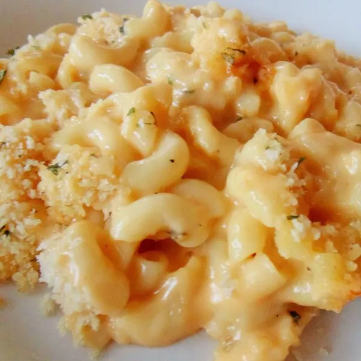

Macaroni Cheese

Description
In this recipe, a mixture of egg and milk is poured over layers of grated cheese and noodles. As the dish bakes, the egg, milk and cheese set into a custard. This recipe is also topped with bread crumbs and baked.
Ingredients
- 7 ounces elbow macaroni
- ¼ cup butter
- 3 tablespoons all-purpose flour
- 2 cups milk
- 1 (8 ounce) package cream cheese
- 4 slices canned jalapeno peppers, chopped
- 2 teaspoons Dijon mustard
- ½ teaspoon ground black pepper
- 3 dashes hot sauce, or to taste
- 2 cups shredded Cheddar cheese
- 1 cup dry bread crumbs
- 2 tablespoons butter
- 2 tablespoons chopped fresh parsley
- salt to taste
Directions
Step 1
- Preheat oven to 400 degrees F (200 degrees C).
Step 2
- Bring a large pot of lightly salted water to a boil. Cook elbow macaroni in the boiling water, stirring occasionally until cooked through but firm to the bite, 8 to 10 minutes. Drain.
Step 3
- Melt 1/4 cup butter in a 3-quart saucepan over medium heat. Stir flour into melted butter and cook until smooth and bubbling, about 1 minute. Mix milk, cream cheese, jalapeno peppers, Dijon mustard, black pepper, and salt into flour-butter mixture; cook, stirring occasionally, until sauce is thickened, about 5 minutes. Mix macaroni and Cheddar cheese into sauce; pour into a 2-quart casserole dish.
Step 4
- Mix bread crumbs, 2 tablespoons butter, and parsley together in a bowl; spread over macaroni and cheese.
Step 5
- Bake in the preheated oven until golden brown, 15 to 20 minutes.